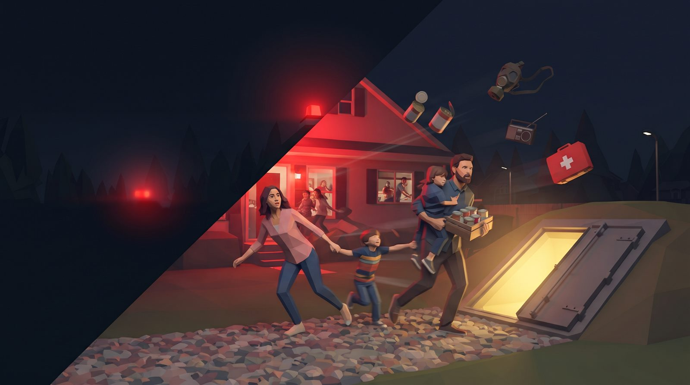
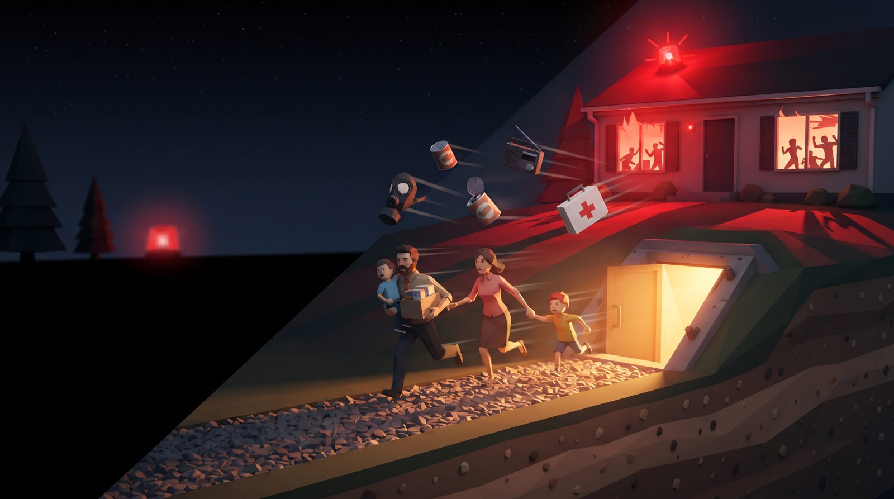

Pixel Doomsday Shelter — join the closed test
The sirens are wailing! Save your family in 60 seconds and survive the shelter. Android · offline · single player
How to join (2 minutes)
- Join the test group. groups.google.com/g/noirpixel-testers → Join group,
with the Google account your Play Store uses — that address is how Google identifies a tester.
Already in the group from one of our other games? Then you're set, skip to step 2.
- Opt in to the test.
play.google.com/apps/testing/com.noirpixel.doomsdayshelter → Become a tester.If it says "app not available", your account is not on the list yet — try again a little later. Order matters. - Install from Play and keep it for 14 days.
play.google.com/store/apps/details?id=com.noirpixel.doomsdayshelterYou don't have to play every day; staying installed is what counts. Google counts 12 testers opted in for 14 continuous days, and an uninstall resets the counter.
What is it?

- 60 seconds. The sirens are on. Grab who and what you can from the house before the hatch closes — every choice follows you underground.
- Days in the shelter. Ration food and water, decide what to do when something knocks on the hatch, and count the days.
- Choose your leader. Who leads the family changes the whole run.
- Türkçe, English, Español, Français, Italiano, Polski, Русский, Bahasa Indonesia · no account, no internet needed.
During the test
- If anything breaks or a screen leaves you unsure what to do, tell us: iletisim.noirpixel@gmail.com. One sentence is enough; a screenshot is gold.
- The game changes during the test. New languages, balance passes and features land as updates — keep it installed and they arrive automatically.
- This test build has no ads and no purchases.
- Test for test: if you're a developer in the same 12-tester situation, send us your opt-in or group link — we install the same day and keep it the full 14 days.
Pixel Doomsday Shelter — kapalı teste katıl
Sirenler çaldı! 60 saniyede aileni kurtar, sığınakta hayatta kal. Android · çevrimdışı · tek oyunculu
Nasıl katılırım? (2 dakika)
- Test grubuna katıl. groups.google.com/g/noirpixel-testers → Gruba katıl.
Telefonundaki Play Store'un kullandığı Google hesabıyla katıl; Google testçiyi o adresten tanıyor.
Diğer oyunlarımızdan dolayı grupta zaten varsan 2. adıma geç.
- Teste kaydol.
play.google.com/apps/testing/com.noirpixel.doomsdayshelter → Test kullanıcısı ol."Uygulama kullanılamıyor" diyorsa hesabın henüz listede değildir — biraz sonra tekrar dene, sıra önemli. - Play'den kur ve 14 gün silme.
play.google.com/store/apps/details?id=com.noirpixel.doomsdayshelterHer gün oynamak zorunda değilsin; kurulu kalması yeterli. Google 12 kişinin 14 gün boyunca kurulu tutmasını sayıyor, silen olursa sayaç başa döner.
Oyun ne?
- 60 saniye. Sirenler çalıyor. Kapak kapanmadan evden kimi ve neyi alabiliyorsan al — her seçimin seninle yeraltına iner.
- Sığınakta günler. Yiyeceği ve suyu paylaştır, kapağa bir şey vurduğunda ne yapacağına karar ver, günleri say.
- Liderini seç. Ailenin başına kimin geçtiği bütün oyunu değiştirir.
- Türkçe, English, Español, Français, Italiano, Polski, Русский, Bahasa Indonesia · hesap ve internet gerekmez.
Test sırasında
- Bir şey bozulursa ya da bir ekranda ne yapacağını anlamazsan yaz: iletisim.noirpixel@gmail.com. Tek cümle yeter, ekran görüntüsü altın değerinde.
- Oyun test boyunca değişecek. Yeni diller, denge turları ve özellikler güncelleme olarak gelir — kurulu tut, kendiliğinden iner.
- Bu test sürümünde reklam ve satın alma yok.
- Teste test: sen de aynı 12 testçi derdindeki bir geliştiriciysen opt-in ya da grup linkini yolla — aynı gün kurar, 14 gün boyunca tutarız.